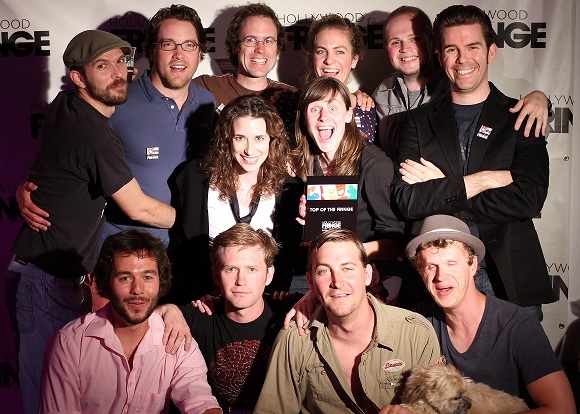

OUR NEW RAP EP IS NOW
AVAILABLE FOR PURCHASE!
In response to overwhelming popular demand, we've produced brand-new, high-end, studio recordings of your favorite Lost Moon Radio hip hop tracks and gathered them together in one reasonably priced EP. Performed by the inimitable Lauren Flans, with support from the Moon Units and the Lost Moon cast, this six-track collection is available to download and cherish always for a mere $4.99. No summer party mix will be complete without it.
• • •
LOST MOON RADIO: EPISODE 12
WINS BIG AT THE HOLLYWOOD FRINGE
Hey! Our latest installment won Best in Comedy and the grand prize Top of the Fringe award at this year's Hollywood Fringe Festival! We had a blast returning to the best theater festival in LA for the third year in a row and sharing ten days in June with so many incredible shows and people, and we were really, really honored to be singled out for those awards. Can't wait for Fringe 2013!
• • •
Sign Up for our Mailing List
Lost Moon Radio is a group of writers, performers, artists, and musicians who create dry comedy and wet rock n' roll. We've got a ton of great new projects debuting in the second half of 2012, including the long-anticipated Lost Moon Radio podcast, a completely revamped website, and of course more live shows.
What's the best way to keep up with these upcoming offerings? Follow us on Facebook or sign up for our mailing list. We'll never email you more than once a week, but we'll definitely keep you up to speed on all the latest developments.